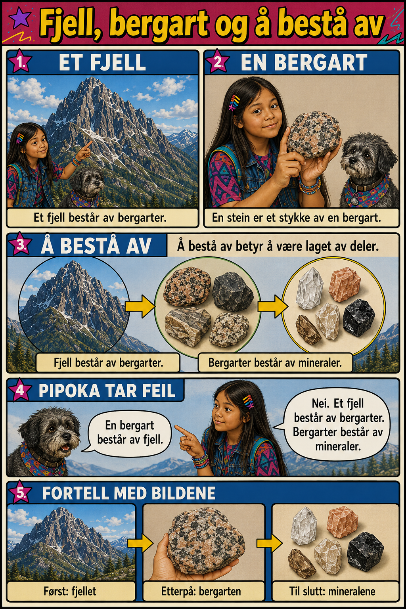

Historie · Forklare tålmodig
Les og beskriv
Edel hjelper Pipoka med skolearbeidet – en historie om å forklare, ett steg om gangen.
Denne historien øver på
Å lese en lengre tekst, beskrive med egne ord, og forklare tålmodig – slik Edel gjør for Pipoka i historien.
1 · Les historien
Edel og Pipoka hadde reist til Åndalsnes for å lære om bergarter. For Edel var turen spennende. For Pipoka var alt nytt.
Pipoka var ikke vant til å reise. Hun ble sliten av nye steder, ukjente lyder og lange turer. Hun var også på en måte analfabet. Hun kunne ikke lese et eneste ord. Hun var tross alt en hund.
Da Edel åpnet skoleoppgaven, så Pipoka bekymret på alle ordene.
– Jeg forstår ingenting, sa Pipoka. – Er en bergart fortsatt The Rock?
Edel pustet rolig.
– Nei, men det går bra. Du trenger ikke å forstå alt med én gang. Vi tar én ting om gangen.
Først viste Edel et bilde av et fjell.
– Et fjell består av bergarter, forklarte hun.
– Hva betyr «består av»? spurte Pipoka.
Edel la flere steiner ved siden av hverandre.
– «Å bestå av» betyr at noe er laget av deler. Et fjell består av bergarter. Bergarter består av mineraler.
Etterpå viste Edel et bilde av magma under bakken.
– Magma er smeltet stein. Når magmaen kjøles ned, begynner den å størkne.
Pipoka tenkte seg om.
– Blir magmaen til granitt fordi den kjøles ned?
– Ja, svarte Edel. – Fordi magmaen kjøles ned, størkner den. Dermed kan det dannes granitt.
Senere fant Edel fram et bilde av en bygning, en trapp, en benkeplate og et monument.
– Granitt er hard og slitesterk. Derfor kan den brukes til mange forskjellige ting.
Pipoka prøvde å forklare hele prosessen:
– Først finnes det varm magma under bakken. Etterpå kjøles magmaen ned. Fordi den blir kaldere, størkner den. Dermed dannes granitt. Granitt kan brukes i trapper og bygninger fordi den er hard og slitesterk.
Edel smilte.
– Nå forklarte du både hvordan granitt blir dannet, og hvordan den kan brukes.
Til slutt forstod Pipoka skoleoppgaven. Hun kunne fortsatt ikke lese, men hun kunne lære ved å se på bilder, lytte og prøve å forklare med egne ord.
Edel hadde vært tålmodig. Derfor virket ikke oppgaven like vanskelig lenger.
2 · Se og beskriv: «å bestå av»

Se på bilde 3 («Å BESTÅ AV»). Beskriv med egne ord: hva består et fjell av? Hva består en bergart av?
3 · Pipoka tar feil igjen
Pipoka sa: «En bergart består av fjell.» Det er feil vei rundt!
4 · Fortell kjeden med bildene
Se på bilde 5 («FORTELL MED BILDENE»). Sett i riktig rekkefølge:
5 · Nå er det din tur
Du har nå hjulpet Pipoka, akkurat som Edel gjorde i historien. Forklar noe du har lært om bergarter – sakte og tålmodig, som om du snakker til noen som ikke vet noe fra før.